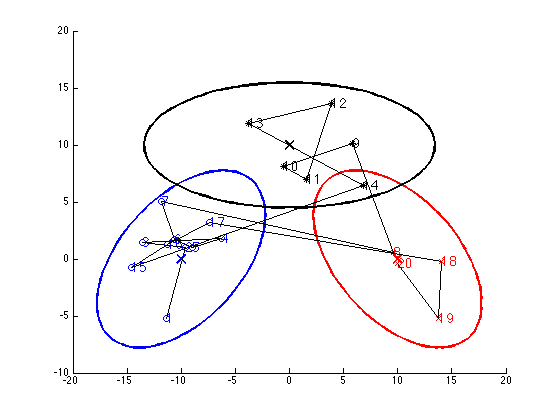
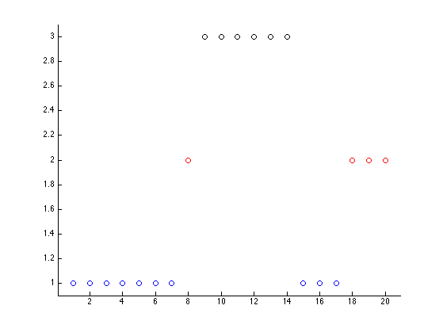

% Illustrate a HMM with gaussian emissions in 2d % (Lillypad model) %close all clear all setSeed(0); K = 3; D = 2; %model = mkRndGaussHmm(K,D); mu = 10*[ -1,0; 1,0; 0,1 ]; Sigma = zeros(2,2,3); sf = 10; Sigma(:,:,1) = sf*[1,1/2;1/2,1]; Sigma(:,:,2) = sf*[1,-1/2;-1/2,1]; Sigma(:,:,3) = sf*[3,0;0,1/2]; A = [0.8 0.1 0.1; 0.1 0.8 0.1; 0.1 0.1 0.8]; pi = [1 0 0]'; emission.mu = mu'; emission.Sigma = Sigma; emission.d= 2; model = hmmCreate('gauss', pi, A, emission); T = 20; [observed, hidden] = hmmSample(model, T, 1); figure; hold on [styles, colors, symbols, str] = plotColors(); for k=1:K gaussPlot2d(model.emission.mu(:,k), model.emission.Sigma(:,:,k),... 'color',colors(k),'plotMarker','false'); ndx=(hidden==k); plot(observed(1,ndx), observed(2,ndx), sprintf('%s%s', colors(k), symbols(k))); end for t=1:T ndx=hidden(t); text(observed(1,t), observed(2,t), sprintf('%d', t), ... 'color', colors(ndx), 'fontsize', 14); end plot(observed(1,:),observed(2,:),'k-','linewidth',1); printPmtkFigure('lillypad1') figure; hold on for k=1:K ndx=find(hidden==k); plot(ndx, hidden(ndx), 'o', 'color', colors(k)); end axis_pct printPmtkFigure('lillypad2') %{ n = 25; z = unidrnd(3,n,1); for i=1:n x(i,:) = mvnrnd(mu(z(i),:), Sigma(:,:,z(i)),1); end % (a) hold on; axis([-10 10 -5 10]); gaussPlot2d(mu(1,:),Sigma(:,:,1),'color','r','plotMarker','false'); gaussPlot2d(mu(2,:),Sigma(:,:,2),'color','g','plotMarker','false'); gaussPlot2d(mu(3,:),Sigma(:,:,3),'color','b','plotMarker','false'); text(mu(1,1)+1/2,mu(1,2),'k=1'); text(mu(2,1)+1/2,mu(2,2),'k=2'); text(mu(3,1)+1/2,mu(3,2),'k=3'); printPmtkFigure('lillypad1'); pause % (b) color = {'r','g','b'}; hold on; axis([min(x(:,1)), max(x(:,1)), min(x(:,2)), max(x(:,2))] + [-1/2 +1/2 -1/2 +1/2]); hold on; % This is a complicated way of doing it, but on my version of octave, the scatter command is ignoring colours plot(x(:,1),x(:,2),'k-','linewidth',3); axis([min(x(:,1)), max(x(:,1)), min(x(:,2)), max(x(:,2))] + [-1/2 +1/2 -1/2 +1/2]); hold on; for k=1:3 plot(x(z==k,1),x(z==k,2),'*','color', color{1,k}, 'linewidth',3); end printPmtkFigure('lillypad2') %} 